Brand
Logo
Vertex is the logo: a V drawn as a path through three hexagonal nodes, from a solid start through a checkpoint to a pastel goal. It comes with a lockup, an app icon, a small-size cut for favicons and a wordmark. The monogram is still open: five new directions are below.
Symbol
The idea: the mark on the personal website, rebuilt in Vici's geometry. The V is still a path through data: a solid start node, a checkpoint at the apex, and a pastel goal the path hasn't quite reached yet. Every node is now a hexagon and both arms run at exactly 60°, the angle of the honeycomb lattice. The nodes are turned so that the arms meet their faces at right angles, which makes the joints look engineered rather than glued on.
Lockup
Symbol and name together, for page headers, title slides and documents. The symbol is about twice the cap height of the name, and the gap between them is a little more than half the cap height.
App icon and favicon
The app icon puts the symbol into a merlot cell. Below 64 px the favicon cut takes over: heavier strokes, solid nodes and no counters, so the V still reads at 16 px.
Wordmark
The name, set in Bricolage Grotesque Semibold at its largest optical size. The dot of the i and both dots of the ü are hexagons. It works on its own where a symbol would be too much, and it's the text half of the lockup. The system's own name, Vici, gets the same treatment.
The wordmarks are outlined from the font by scripts/brand/wordmark.py, so they look identical everywhere and need no installed fonts.
Monogram
For places where the full mark is too wide: a profile picture, a signature, the corner of a slide, a watermark. All five options follow the same rules. Every diagonal runs at 60° like Vertex's arms, every round form is a hexagon, and terminals are cut flat on the cap line. Wherever a P has a bowl, it's built from a hexagon. Each option comes in colour, dark and mono, and as a tile for avatars and app icons.
1 · Ligature
The idea: the V's right arm runs straight into the top corner of the P, so the two letters share one sharp junction and read as a single sign. The bowl is three quarters of a hexagon, with its slanted sides parallel to the V's arms. The pastel counter is the only colour.
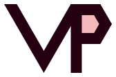
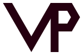
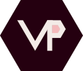
Good for: headers, title slides, the back of a business card. It's the widest of the five, so give it at least 24 px of height.
2 · Stem
The idea: the V's second arm stands upright and becomes the stem of the P. One diagonal, one vertical, no wasted width. The most compact of the five and the strongest as a small avatar.
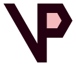
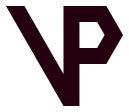
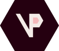
Good for: profile pictures, favicons of personal tools, anything square. The V reads a little less obviously than in the others because one of its arms is upright.
3 · Cell
The idea: the P's bowl is a whole hexagon cell, upright like the nodes in Vertex, with a pastel centre: Vertex's goal node, now inside the initial. The closest relative of the logo, and the one that shows the hexagon most plainly.
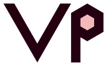
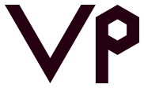
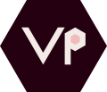
Good for: places where the monogram stands next to Vertex, like a slide master with the logo on the title slide and the monogram on every other slide.
4 · Seal
The idea: the initials in lighter strokes inside a thin hexagon ring, like a signet or a stamp. Calm and a little formal. In the tile, the ring moves inside the cell as a pastel line.
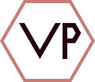
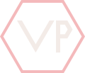
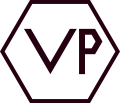
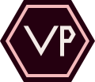
Good for: signatures, certificates, watermarks and stamps in print. The thin ring needs space, so use it from 32 px up.
5 · Initials
The idea: V and P from the wordmark's typeface, Bricolage Grotesque Bold, closed by a hexagon full stop in pastel. The most direct option, and it belongs to the wordmark like a short signature belongs to a full one.
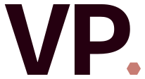
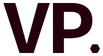
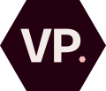
Good for: email signatures, document footers, the favicon of a personal site. It's the safest choice, and also the least unusual.
Side by side
The tiles at the sizes they'll mostly be seen at: 64, 40, 32 and 24 px.
| Option | Character | Smallest size | Link to Vertex | Best for |
|---|---|---|---|---|
| Ligature | Sharp, connected | 24 px high | 60° arms, pastel counter | Headers, slides |
| Stem | Compact, bold | 16 px | 60° arm, pastel counter | Avatars, small icons |
| Cell | Geometric, playful | 24 px | The goal node as the bowl | Next to the logo |
| Seal | Calm, formal | 32 px | Hexagon ring | Signatures, print |
| Initials | Direct, typographic | 16 px | The wordmark's letters | Email, documents |
Choosing
Pick one, or combine ideas: the Stem's silhouette with the Cell's hexagon bowl, for example. The chosen monogram moves to assets/logo/monogram/ and the others to the archive. All five are drawn from geometry in scripts/lib/logos.mjs, so stroke weight, bowl size and colours are quick to adjust.
Usage
- Clear space: keep at least the height of the goal node free on every side of the symbol, and twice that around lockups. Monogram tiles need no extra space beyond their own cell.
- Minimum size: the symbol at 24 px height, the favicon cut from 16 px, the lockup at 120 px width.
- Colour: use the colour version on linen or white, the dark version on merlot or photography, and mono when only one ink is available (stamps, embossing, single-colour print).
- Don't rotate, stretch, outline or add shadows, don't swap the hexagons back to circles, and don't put the colour version on mid-tone backgrounds where the goal node disappears.
- Rights: the logo, the monogram options and the wordmarks are Victor Pflüger's personal brand assets and are not covered by the MIT licence of the code. See
LICENSE.
Earlier concepts
Facet and Honeycomb were the other two symbol directions before Vertex was chosen. They stay in assets/logo/archive/ for reference. The first monogram draft, one continuous line with a slanted P, was dropped in favour of the five options above.
Facet and Honeycomb
The idea of Facet: a hexagon split into three rhombi becomes a cube, the building block of data. The two lower faces meet in a V-shaped notch under the pastel top face.
The idea of Honeycomb: five honeycomb cells form a V, their colour running from the base colour to pastel, like a journey from a solid start to a soft goal.
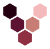
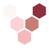